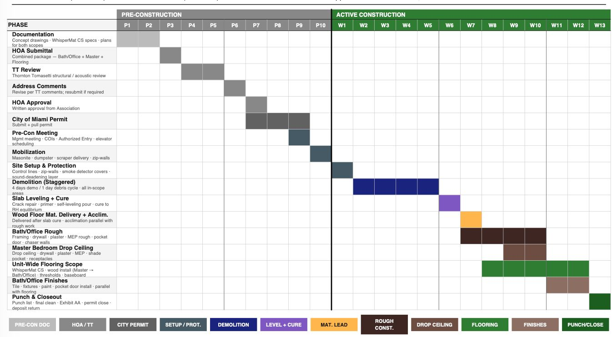
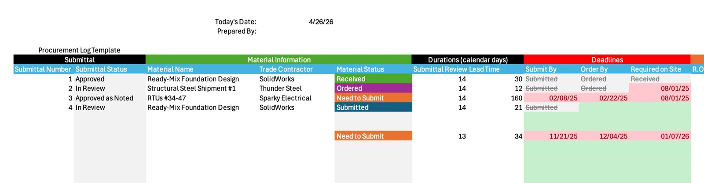
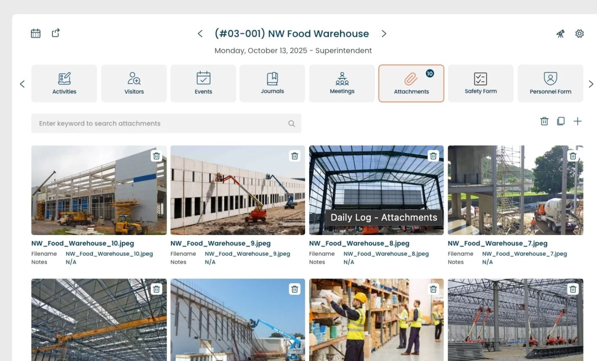
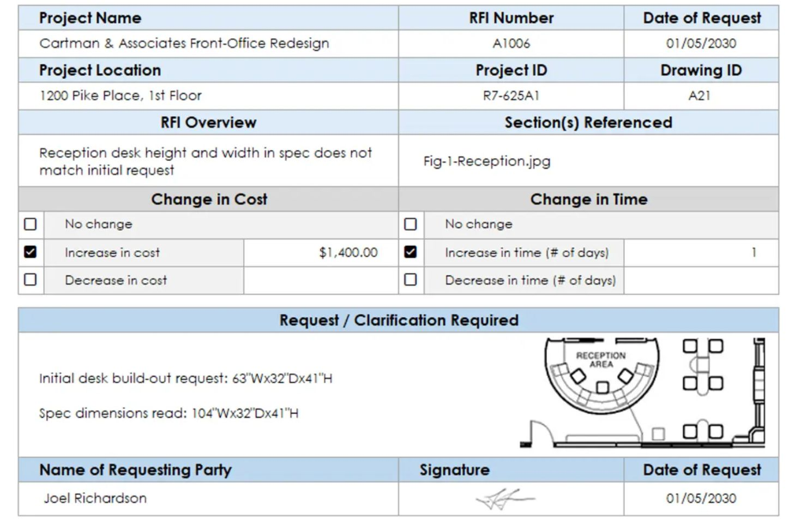
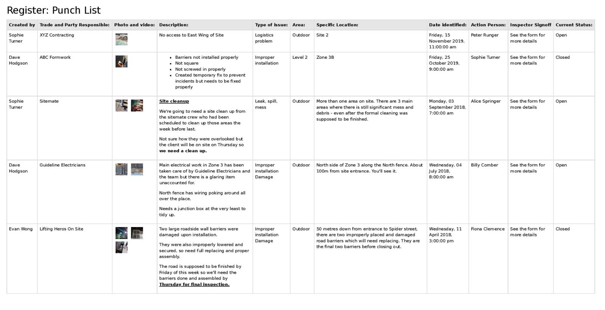

Documents
Operational artifacts.
These documents are the operational backbone of the work. Some redacted samples will be added as they’re cleared for publishing; the page is structured to hold the rhythm whether samples are present or still in preparation.
Line-item estimate
A cost breakdown you can interrogate: assemblies, allowances, alternates, and the decision points that affect price.

CSI scope of work
Trade-by-trade scope tied to drawings/specs so responsibilities don’t blur between disciplines.

Schedule baseline
Milestones and sequencing built around long-lead items and inspections—so the calendar reflects reality.

Procurement log
Submittals, approvals, lead times, and delivery dates tracked early to protect the schedule.

Weekly site report
A concise weekly record: progress photos, decisions made, open items, and what’s next.

RFI + decision log
Questions and owner/architect decisions captured as they happen so nothing disappears into hallway conversations.

Quality checklists
Assembly-level checks run while work is exposed, not after finishes go in.
Punch list register
A structured closeout list with ownership and dates—so completion is coordinated, not chaotic.

Closeout binder
Warranty info, manuals, as-builts (as applicable), and final documentation packaged for long-term reference.
Operational backbone
License and coverage
Florida CGC license number and insurance certificates are provided directly with proposals and on request.